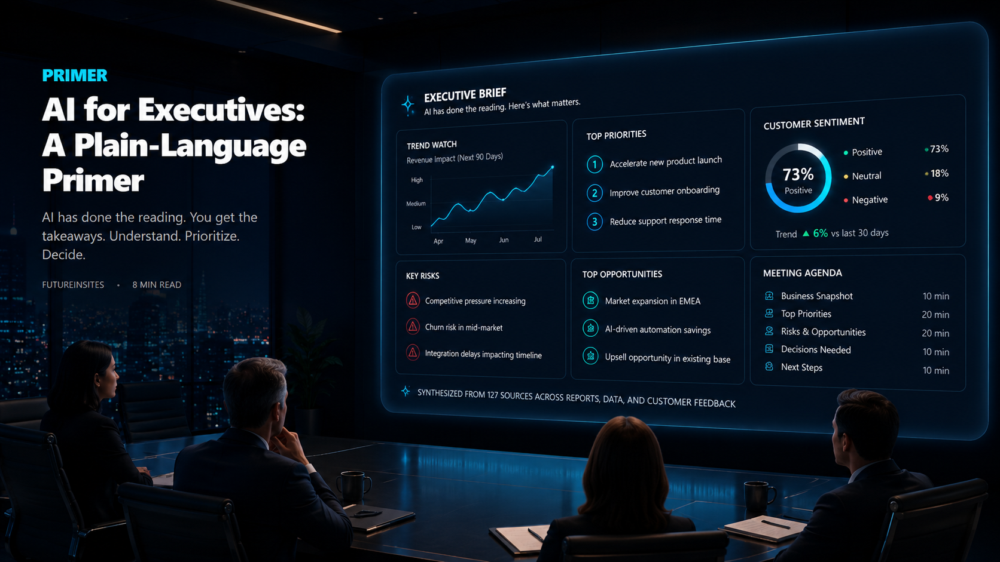
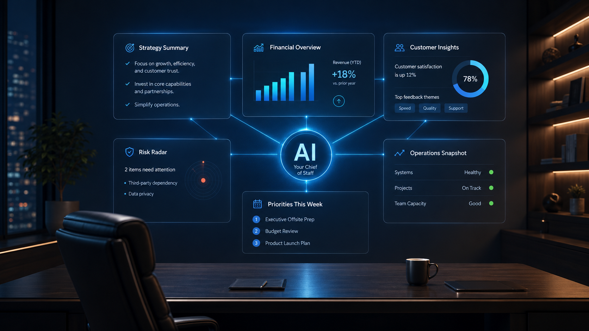

AI is not magic, and it is not science fiction. It is a powerful new way for an organization to work with language, knowledge, and reasoning at speed — and the leaders who get this right early will compound advantages quickly.
This primer is the entry point in the FutureInSites series. It is written for executives, board members, and senior leaders who do not need to become AI experts and do not want a technical lecture, but who will be in conversations about AI for the rest of their careers and need a working mental model.

What AI actually is
The AI that matters today has been trained on an almost incomprehensibly large amount of text: books, research, legal documents, financial filings, medical literature, news, code, and more. Through that training it developed a working understanding of language, concepts, reasoning, and how ideas connect.
When you give it a task — write this, summarize that, analyze this, find the flaw in that argument — it draws on that understanding to produce output at a quality and speed no human team can match.
A few things it is not. It is not a search engine. It is not a robot. It does not think the way humans do. And it is not magic. It is a very powerful tool for working with language, knowledge, and reasoning.
Two modes worth understanding
Not all AI does the same thing. For someone thinking about where it creates value, two modes matter most. Understanding the difference makes everything that follows click into place.
Generative AI creates something when you give it a task. A draft, a summary, a complex analysis, a first version of a document. You provide the input and direction; it produces the output. Think of it as a brilliant on-demand collaborator who can draft an investor update, summarize a deck, compare two strategic options, or explain an unfamiliar concept in seconds rather than hours.
Agentic AI goes further. It does not just answer a question; it takes a sequence of actions on your behalf — searching, compiling, analyzing, monitoring, flagging — autonomously, across multiple steps, while you focus on something else. Think of the difference between an analyst who answers a specific question and a chief of staff who runs the entire process and comes back with a recommendation.
The distinction matters because the on-ramp is different. Generative AI is available today, requires almost no setup, and lets a leader start building intuition this week. Agentic AI requires more infrastructure but is where the highest-leverage applications live: ongoing monitoring, automated workflows, systems that work overnight. Both are relevant. The right sequence is to start with generative, build intuition for what is possible, then layer in agentic applications where the time savings and insight quality justify it.

Where the value lands
AI creates value in three places inside an organization. Each lands differently, and the strongest programs invest in all three.
For the organization. Cross-team systems and workflows. Portfolio or business-unit monitoring. Executive briefings synthesized from many data sources. Benchmarks across departments. The leverage is at the firm level: information that previously required a team of analysts now arrives on a leader's desk every Monday morning.
For a function. A specific business area. Customer support, deal sourcing, revenue cycle, financial reporting, document review. The leverage is operational density: cognitive work that consumed an entire department gets compressed into a smaller footprint with higher consistency.
For the leader personally. Preparation that used to take hours. Decision stress-testing. Communications drafts you refine rather than write from scratch. On-demand expertise across any domain. This is often where the value shows up fastest, and it is the area most senior executives are slowest to explore.
What AI is good at, and what it is not yet good at
It is honest to name both.
AI is genuinely powerful at synthesizing large volumes of information, drafting first versions of almost any document, analyzing patterns, explaining concepts at the depth you need, and stress-testing your own thinking by arguing the other side of an argument.
It is not yet reliable for final judgment calls on high-stakes decisions, blind trust on factual claims (these models can be confidently wrong), or running well without clear direction. Quality of output depends heavily on how well you direct it. Like any capable employee, AI does better work with clear context and good instructions.
The leader's job stays the same: provide judgment at the decision points, verify anything high-stakes, and set direction. The shift is that everything before and around those decisions becomes dramatically faster.
Where to start
Most senior leaders do not think in terms of "agents" or "prompts" or "models." They think in terms of people. The cleanest way to make AI concrete is to answer one question, and then take the answer seriously:
Whatever the answer is, that is almost certainly the highest-value first AI use case. The question bypasses the vocabulary problem entirely and goes straight to outcomes. It also produces something concrete enough to build a working demonstration around, not just a presentation.
From here
Once a basic mental model is in place, the natural next read is Building AI Agents: An 8-Step Framework. It is the technical companion to this primer, walking through the eight decisions that shape every production AI agent. Read it when the conversation moves from "where AI fits" to "how to build it."